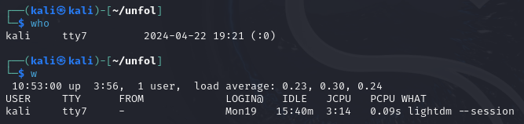
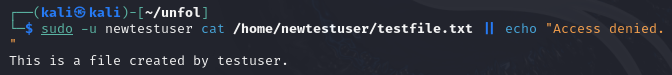
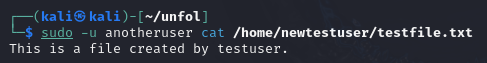
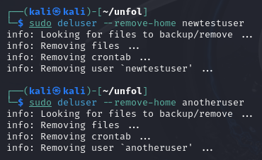

1: User Management System Operations
This documentation will guide you through the process of performing common user management operations on a Linux-based system, specifically focusing on Kali Linux. User management is crucial for maintaining the security and organization of users in an operating system. It involves creating, modifying, deleting user accounts and managing their permissions.
1.1 Creating a New User
Creating a user account involves assigning a username, optionally setting a password, and creating a user home directory.
sudo adduser newusernameThis command will prompt you to enter a password and fill additional details such as the full name, room number, work phone, home phone, and other information. If you simply want to create a user without an interactive prompt:
sudo useradd -m -s /bin/bash newusername
sudo passwd newusername1.2 Deleting a User
To remove a user and their home directory, use the following commands. Caution is advised as this operation is irreversible.
sudo deluser newusername
sudo rm -r /home/newusernameIf you want to delete the user without removing their home directory, omit the second command.
1.3 Modifying User Details
To modify user details, you can use the usermod command. Examples include changing the user’s login name or home directory.
sudo usermod -l newlogin oldlogin
sudo usermod -d /new/home -m usernameThe first command changes the user's login name from oldlogin to newlogin, while the second command changes the user's home directory to /new/home and moves the contents of the old directory to the new one.
1.4 Managing User Groups
Groups are used to manage a set of users under a common security context. Here’s how to add a user to a group and remove a user from a group.
sudo usermod -a -G groupname username
sudo deluser username groupnameThe first command adds 'username' to 'groupname'. The second command removes 'username' from 'groupname'.
1.5 Setting Permissions
Permissions control what users can do with files and directories. The chmod command is used to set these permissions.
sudo chmod 644 filenameThis command sets read and write permissions for the owner, and read-only for the group and others, for 'filename'.
1.6 Listing Users
To view all the users on the system, you can use the following command, which reads the /etc/passwd file and extracts the usernames:
cut -d: -f1 /etc/passwd1.7 Finding User Details
To get detailed information about a user, such as UID, GID, home directory, and shell, use the id command:
id username1.8 Locking and Unlocking User Accounts
To prevent a user from logging into the system, you can lock their account. Unlocking allows access again:
sudo usermod -L username # Lock user
sudo usermod -U username # Unlock userLocking an account disables its password, effectively preventing the user from logging in using authentication methods that rely on passwords.
1.9 Managing User Password Expiry
Setting password expiry can enhance security by requiring users to change their passwords periodically:
sudo chage -M 90 username # Set password to expire after 90 days
sudo chage -l username # List password and account expiration informationThis sets the password to expire after 90 days, which is a common security policy in many organizations.
1.10 Managing User Sessions
To see which users are currently logged in and their activity, use the who and w commands:
who # List all logged in users
w # Show who is logged in and what they are doing1.11 Batch User Creation
For creating multiple users at once, a script can be used to streamline the process. Below is an example of a simple script to create several users with default settings:
for user in user1 user2 user3; do
sudo useradd -m $user
sudo passwd $user
doneThis loop iterates through a list of usernames, creates each user, and sets an initial password.
2. User Management System Demonstration
This section merges initial and extended demonstrations to showcase a full spectrum of user management tasks on Kali Linux. These commands cover user creation, modification, inspection, file management, and access control, providing a robust demonstration that can be executed sequentially to observe the effects firsthand.
2.1 Setup Initial Environment
Ensure the environment is clean by removing any previously created users and files (if they exist).
sudo deluser --remove-home testuser
sudo deluser --remove-home anotheruser

2.2 Create Users
Create two new users: 'testuser' and 'anotheruser', and assign passwords to them.
sudo useradd -m testuser
echo "testuser:password" | sudo chpasswd
sudo useradd -m anotheruser
echo "anotheruser:password" | sudo chpasswd

2.3 Create a File as 'testuser'
'testuser' creates a file to be used in later demonstrations.
sudo -u testuser touch /home/testuser/testfile.txt
echo "This is a file created by testuser." | sudo -u testuser tee /home/testuser/testfile.txt

2.4 Change Ownership of the File
Change the ownership of the file from 'testuser' to 'anotheruser' to demonstrate the use of the chown command.
sudo chown anotheruser:anotheruser /home/testuser/testfile.txt
2.5 Modify User Information
Change the login name of 'testuser' to 'newtestuser' and update their home directory accordingly.
sudo usermod -l newtestuser -d /home/newtestuser -m testuser
2.6 Lock and Unlock User Account
Lock 'newtestuser' to prevent login and then unlock it to restore access.
sudo usermod -L newtestuser
sudo usermod -U newtestuser

2.7 Set Password Expiry
Set the password for 'newtestuser' to expire in 30 days, enhancing security through periodic mandatory updates.
sudo chage -M 30 newtestuser
2.8 Check User Login Details
Check which users are currently logged in and view their activities, verifying user presence and system access.
who
w

Figure: Check User Login Details
2.9 Attempt File Access by Original Owner
Verify that 'newtestuser' (formerly 'testuser') cannot access the file after ownership has been transferred to 'anotheruser'.
sudo -u newtestuser cat /home/newtestuser/testfile.txt || echo "Access denied."

Figure: Attempt File Access by Original Owner
2.10 Access File as New Owner
'anotheruser' accesses the file to confirm successful ownership transfer and validate their permissions.
sudo -u anotheruser cat /home/testuser/testfile.txt

Figure: Access File as New Owner
2.11 Clean Up
Remove 'newtestuser' and 'anotheruser' from the system to ensure a clean state post-demonstration.
sudo deluser --remove-home newtestuser
sudo deluser --remove-home anotheruser

Figure: Clean Up